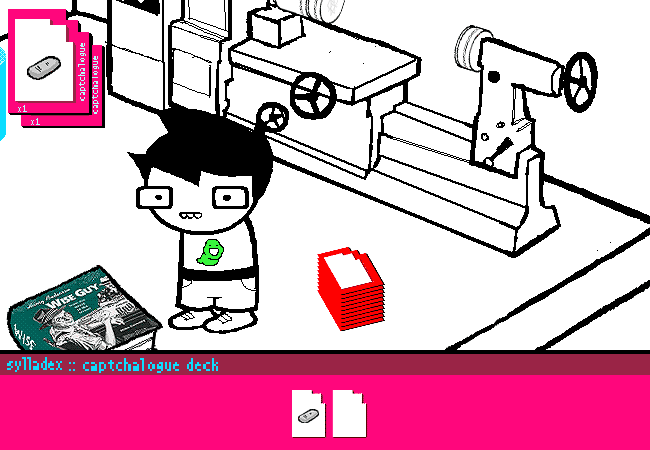

Introduction to MSPA Animation
Approach to animating a Sprite Mode panel, core principles and terms, and other fun stuff.
Hey, my name is Boogs, I write a
fan adventure on MSPFA and I like animating my panels very accurately to the MSPA style. That's all there really is to say on the matter.
If before reading this guide / others, you'd like to see some of my work to judge whether I know what I'm talking about or not, my fan adventure
Good Daveternoon was made entirely to practice some high-detail MSPA animations. Flip through it and see for yourself. Now let's start properly.
The way nearly all panel animations on Homestuck, and probably 100% of the prior animations on MSPA were made was by using Photoshop CS3's frame animation menu. This means every frame was manually positioned and made by moving layers around, animating their opacity, visibility and effects.
Versions of photoshop from CS2 onward should still be able to do this, and CS2 is the software I personally use to make all my panels across all my work.
This article, specifically Part 3, is based on the assumption you use photoshop, but most of it applies to any art program.
Part 1: Preparing for efficiency
A big aspect of preparing to animate a panel is having a lot of assets ready for you to work with.
Look at Egbert celebrating up there. The panel uses the character base, but cleverly switches between poses and layers like “legs apart, legs crossed, hand up, hand forward”, to convey a solid snappy sense of movement.
Preparing a big amount of assets is very important in order to make good Sprite Mode animations fast. Having to make 1~3 new assets for every panel is normal, but if you need to make 8 new assets for a simple motion, that’s too much work every time!
Imagine if that dancing panel was some unique move, like a diagonal finger sway in a disco. It’d look new and interesting, but it’d take a lot of time and effort to make it look good, while just making a funky little jig in place using punch and run assets was more efficient and equally comedic.
To solve this, the answer I go with is “prepare a ton in advance”. For every character I finish spriting, I make sure I have enough layers to do whatever I want when posing the character.
Part 2: The bread and the butter

Sprite Mode is all about keeping a pipeline of panels moving and flowing, with simple tricks used to great effect.
The first trick you HAVE to know to make simple and good animations is “Tickback”, a term coined by redditstuck author Bin.
A Tickback frame, which is probably called “overshooting” or something by professional animators, is a frame that takes place prior to the final frame of an object moving, and has that object “overshooting” its destination by a bit, or simply moved some pixels from that destination.
When you snap your fingers, you can notice there’s a miniscule amount of time where your fingers are a little farther apart than when your hand fully stops afterwards. That’s the real-life equivalent of Tickback.
The name tickback, really, is because the frame afterwards shows the object “ticking back” into position.
As you can see, the Tickback frames aren’t particularly notable at a glance, but make the motions of the subject more pleasing to follow. The springy bounce adds impact without complexifying the action.
Now the question is, when to use tickback?
Answer is, most simple actions that would otherwise be muddy and tiring to follow.
If you look again at the Egbert panel above, you’ll now notice every item entering a captchalogue card causes it to spring a little.
That’s tickback frames, adding some well-needed spice to a very simple event. If the items just flashed into position with no added bumps, it’d be just a bit harder for the viewer to notice where the items went from the ground and to the top, since Egbert is still moving down there.
(Egbert also teleports instead of moving long distances, since animating a proper walk from place to place is somewhat of an awkward process, and teleports get the job done.)
Next principle that’s important to learn is delay. Now, I’d personally say Homestuck itself doesn’t employ this stuff perfectly: Some panels have pacing that I consider bafflingly slow.
There’s generally 3 kinds of frames Homestuck uses for different things:
Static, Hold, and Motion.
I just made these up on the spot.
Also, I’m gonna get into specific time values here, so write these down in your brain.
A Static frame, typically 1 second or longer, is a frame where nothing moves. “But nothing moves in any still frame!”
Well, the difference is that in other frames, the viewer is processing an action.
Statics are meant to let the viewer digest the current scene, being either before an action or after it. These are mostly going to manifest in the form of the opening frame and the final frame of the panel, before something happened and afterwards.
(I don’t think I need to show an example here? It’s just still pictures. You’ve seen ‘em.)
A
Hold frame, ranging anywhere from
0,2 to 0,8 seconds, is similar to a static, but is meant to separate parts of an “action string” in a panel, example given below (from
my comic).
These are meant to give a finished action, usually simple, time to begin being processed just enough by the viewer so they can get ready to see the next small action.
0.5 seconds is the value most commonly used in MSPA, but if you wanna fine tune your panels, play with these intervals a little, try 0.7s or 0.4s. Small things like this can really help a panel flow nicely.
In this panel, there’s Hold frames after the kick, the records moving out, and finally falling down, followed by the last action of the record tipping. (The initial Static frame was 0.5 seconds long here, which made for a nice accelerating rhythm as the panel went on.)
"
A Motion frame, almost always 0,05 seconds long, is what the “minimum” length of a frame should be in MSPA animations. This minimum also solidifies the “framerate” of panels at 20 frames per second.
From here, any specifics would be down to your own animation understanding: Make things move at discernable speeds, acceleration, nothing I can tell you that professionals can’t.
(I haven’t mentioned earlier, but tickback frames should probably always be this long.)
A smaller thing within motion frames to know when to use is Stun intervals, sometimes as sets of 0.05s frames and sometimes as single 0.1s frames, where an object that’s been in motion recently needs to have a particular impact highlighted, while not stopping motion entirely.
This is usually called hitstun in animation, and is a pretty well known principle.
In this
edited example of
page 1582 of Homestuck, I extended all
stun (and
hold) frames to be even longer, to bring out how they break apart this (incredible and exemplary) panel.
Part 3: Accurate MSPA rendering
Alright, this is getting into proper nerd territory Software specifications, file compression et cetera. Some may say this isn’t “Introduction to MSPA animation” material, but this is something I think is really important to at least be aware of.
For starters, there’s the 650x450 panel presentation.
The vast majority of MSPA panels are in 650x450- Jailbreak used bigger panels, and some pages along history have used bigger panels, usually still 650px wide, just taller, but this principle kinda never breaks.
To easily export panels cropped into that specific size, use the Slice Tool in photoshop. You can set it to select an automatic specific size, and you’re gonna use that a lot.
To properly use this tool, you will need to learn to use the Save For Web menu. (Which is also reached with the shortcut Ctrl-Alt-Shift-S. Thank me later.)
Save for Web is a daunting power tool that saves a ton of time on trying to perfect your GIFs, and if you choose to dedicate time to study it, you can do so much, so fast. But until you do that- or I write a tips ‘n tricks document for it- Let’s cover the basics of this thing.
To the right is the bulk of the interactable options.
You’ll have a few presets there, and none of them are quite what Hussie used for most of Homestuck.
The settings pictured here are the general norm.
Specifics time!
The button that currently says “Selective” lists the methods the program chooses what colors get in the gif. If you get some ugly dithering you don’t like, try switching this around with Adaptive and Perceptual.
The button saying “Pattern” is used to select Dither methods. Dithering, is, basically, using few colors of pixels in specific layouts to trick the eye into seeing more colors than the gif actually has.
The other Dithering methods are Diffusion and Noise. The short answer: Noise is practically worthless, and diffusion is graphically inferior in my opinion, but viable.
The banner under this paragraph shows the differences- but you may need to lean real close to your monitor, or zoom in an editing program. Just zooming in with a browser will be antialiased- which is our next topic, kind of.
On the process of assembling panels I won’t quite comment, there’s plenty good guides on making MSPA accurate assets that aren’t about animation, but while I’m mentioning exporting, it’s valuable to try and optimize your assets to use low-ish color totals, so minor assets don’t hog up the entire palette when exporting, and cause unwanted dithering.
Also, back to save for web, see that tab reading “Image Size”? You can use that to resize your exported images, and with it, the slices.
If you make a 1300x900 slice to cover an entire room, and then shrink to 50% in Save for Web, you’ll get something similar to
Page 4 of Homestuck. To have accurate downscaling, use Bicubic Sharper in this menu.
If you’re doing the opposite and want to zoom into a 325x225 slice, use Nearest Neighbor to retain pixel sizes.
Part 4: Afterword
After what! I’m not close to done.
...
But I am done with this page.
Please feel free to browse my other specific panel breakdowns, where I go over (and mostly just gush) on some excellent executions of various Homestuck panels. It’s a great process, scrolling through pre-act-6 homestuck, (you know, back when it had good panels,) and finding small tricks and inspirations as I go along. Highly recommended.
Hopefully this was helpful, thanks for reading.